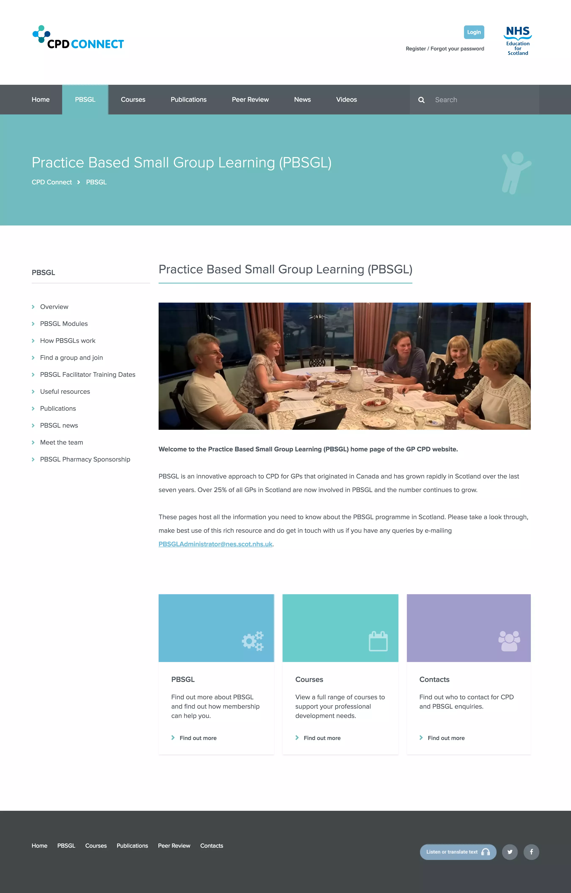

A Website for CPD Connect commissioned by NHS Education. I designed the site and worked on the development with Tactuum, delivering a clean, simple and elegant design.
The site is built on umbraco and offers an easy to use interface to manage and maintain content. It's also fully responsive for a great experience on a range of devices and screen sizes.
